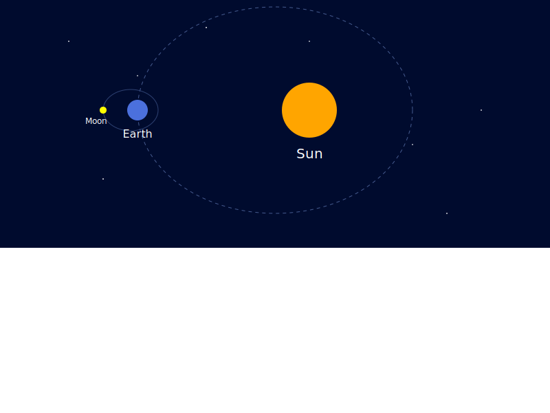
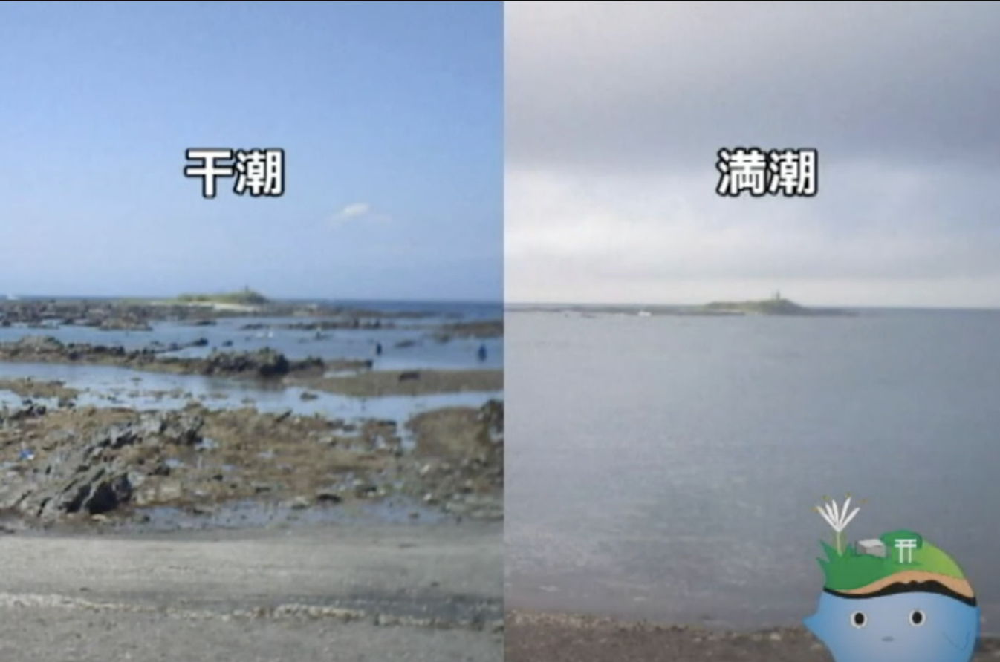
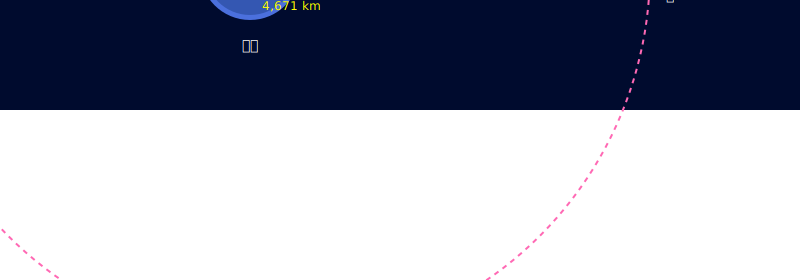
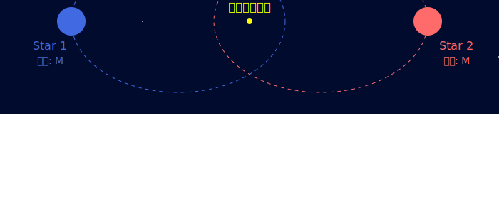
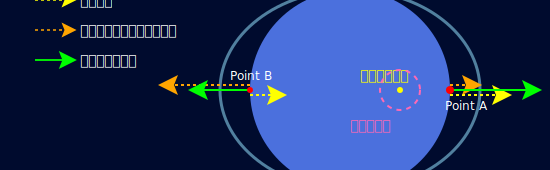
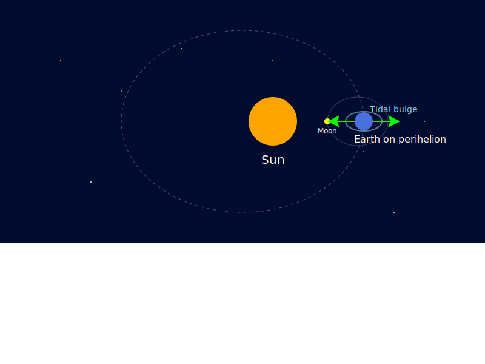
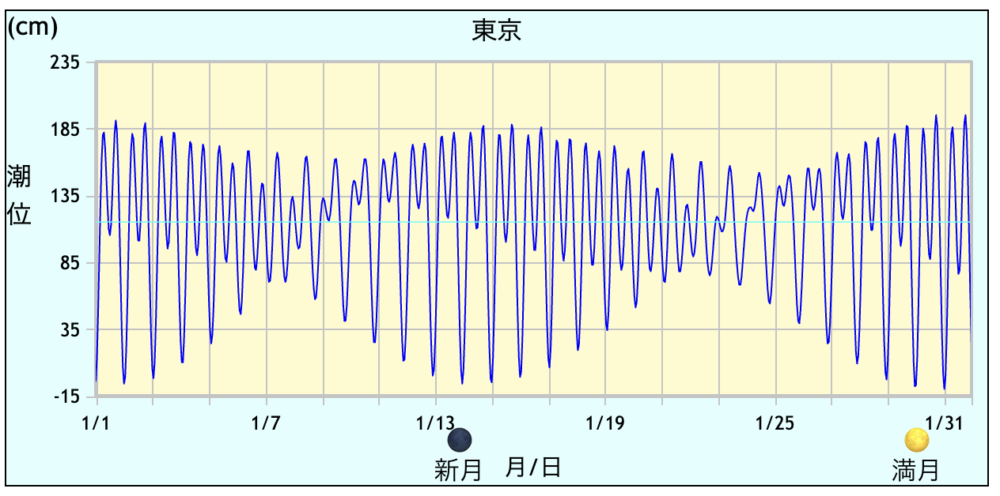

### 🌏地球から🌌宇宙まで！ ### 〜ケプラーの法則で繋がる天体の運動〜  --- ### 自己紹介 <div class="profile-container"> <div class="profile-left" data-markdown> * さめ(meg-ssk) * 🧑💻 フリーランスのソフトウェアエンジニア * 得意分野: * 📸 コンピュータビジョン (画像認識/点群処理) * 🌍 空間情報処理 (GIS/リモートセンシング) * ☁️ クラウドインフラ設計/IaC (AWS, GCP) * [GitHub](https://github.com/s-sasaki-earthsea-wizard) * [YouTube](https://www.youtube.com/@SyotaSasaki-EW) * [Speaker Deck](https://speakerdeck.com/syotasasaki593876) </div> <div class="profile-right">  </div> </div> --- ### 学生時代の専攻 <div class="simple-box" data-markdown> * 💧 水文学 (Hydrology) * 🌟「天文学は天の星を研究する学問」 * 🌏「水文学は地上の水を研究する学問」 * わたしの恩師の言葉です！ </div> <div class="highlight-box"> * 今日のBH集会は、🌏地球のさめと、🌟宇宙のひかりさんのコラボです！ </div> --- ### ケプラーの法則とは？ <div class="container"> <div class="col-box-left" data-markdown> * 天文学者ヨハネス・ケプラーが発見した、天体の運動に関する3つの法則 * **第一法則: 天体は楕円軌道で公転する** * 今日は第一法則にフォーカスを当てて解説します！ </div> <div class="col-right"> </div> </div> --- ### ケプラーの第一法則 <div class="simple-box" data-markdown> * **惑星は太陽の周りを楕円軌道で公転する** * 🌏地球も☀️太陽の周りを楕円軌道で回っている * 🌕月も地球の周りを楕円軌道で回っている </div>  --- ### 潮の満ち引き <div class="simple-box" data-markdown> * 天体の運動に地球の水が影響される自然現象の例として、潮の満ち引きを紹介します * 同じ場所でも海面の高さが時間によって全く異なる！ </div>  [横須賀市公式YouTubeチャンネルの動画](https://www.youtube.com/watch?v=VsXczttoSJw)より --- ### 今回仮定すること <div class="simple-box" data-markdown> * **地球は球である** * 本当の地球は楕円体 * さらに山や谷があってでこぼこしている * **海水は完全流体である** * 実際の海水は粘性があり地球の自転に引きずられる * 水飴を塗ったボールを回すと、水飴がボールに引きずられるようなイメージ * **地球の自転による遠心力を無視する** </div> --- ### 地球と月のバリセンター <div class="simple-box" data-markdown> * 🌏地球と🌕月は互いに引き合いながら共通の重心（バリセンター）を中心に回転する * バリセンターは地球の中心から約4,671 km、地表面からは約1,700 km離れた位置にある * バリセンターから最も遠い位置で「見かけの遠心力」が最も大きくなる </div>  --- ### 連星系の運動 <div class="simple-box" data-markdown> * 質量比が大きいので目立たないが、🌏地球と🌕月は本質的には連星系として振る舞う * 連星系: 2つの天体が互いに重力で引き合いながら共通の重心で回転する * 以下は質量が同じ天体の連星系の軌道の例 </div>  --- ### 潮汐力 <div class="simple-box" data-markdown> * 🌕**月の引力とバリセンターを中心とする公転の遠心力の差が潮汐力** * 🌕月に近い側では月の引力が強い * 🌕月の反対側ではバリセンターから最も遠いため見かけの遠心力が相対的に大きく働く * **結果として地球上の海水が卵状(潮汐バルジ)に盛り上がる** </div> --- ### 潮汐バルジの形成 * 月に最も近い点: 引力が最大、遠心力が最小 * 月から最も遠い点: 引力が最小、遠心力が最大  <div class="highlight-box" data-markdown> * 月の引力と遠心力の合力でバルジが形成される！ </div> --- ### 🌞太陽の影響 <div class="simple-box" data-markdown> * 🌕月の引力は🌞太陽の引力と合成される * 🌏地球と🌕月と🌞太陽が一直線に並ぶとき(満月🌕 or 新月🌑)、潮汐力が最大となる (大潮) </div> --- ### 近日点での潮汐力 <div class="simple-box" data-markdown> * 🌏地球が太陽に最も近い場所(近日点)にいる * 🌕月と🌏地球と🌞太陽が一直線に並ぶ * **潮汐力が最大となる！** </div>  --- ### 潮汐力の周期性 <div class="simple-box" data-markdown> * 月の公転と地球の自転によって潮汐力が周期的に変化する (M<sub>2</sub>波) * 地球の自転によって太陽の引力が周期的に変化する (S<sub>2</sub>波) * 月、地球、太陽の相対的な位置関係の変化によって様々な周期の波が発生する (O<sub>1</sub>波, K<sub>1</sub>波, Sa波...) * **複数の正弦波の合成(フーリエ級数)で潮汐力の周期性を表現できる** </div> --- ### 潮位の周期変動の実例  <div class="highlight-box" data-markdown> * いかにもなフーリエ級数のグラフ！ * 🌤️[気象庁](https://www.data.jma.go.jp/kaiyou/db/tide/suisan/)が公表している潮位データを利用 </div> --- ### まとめ (さめパート) <div class="simple-box" data-markdown> * **ケプラーの法則に起因する天体の運動が、地球上の自然現象に影響を与える** * 🌕月の引力と🌏地球の公転による遠心力の差が潮汐力 (の主要因) * 天体の楕円軌道が地球上の潮汐現象に影響を与えている </div> <div class="highlight-box" data-markdown> * **天体スケールの運動が地球上の身近な自然現象に影響を与えている！** * 🌌宇宙と🌏地球の物理が様々な形で繋がっている * 今日はその一例として潮汐力を紹介しました！ </div> --- ### 参考文献 * [Paul Webb, Introduction to Oceanography, Roger Williams University Open Publishing](https://rwu.pressbooks.pub/webboceanography/chapter/11-1-tidal-forces/) * アニメーションによる解説がとてもわかりやすいです！ * 本発表の潮汐力の説明に大いに参考にしました * より詳しく知りたい人はぜひ読んでみてください！